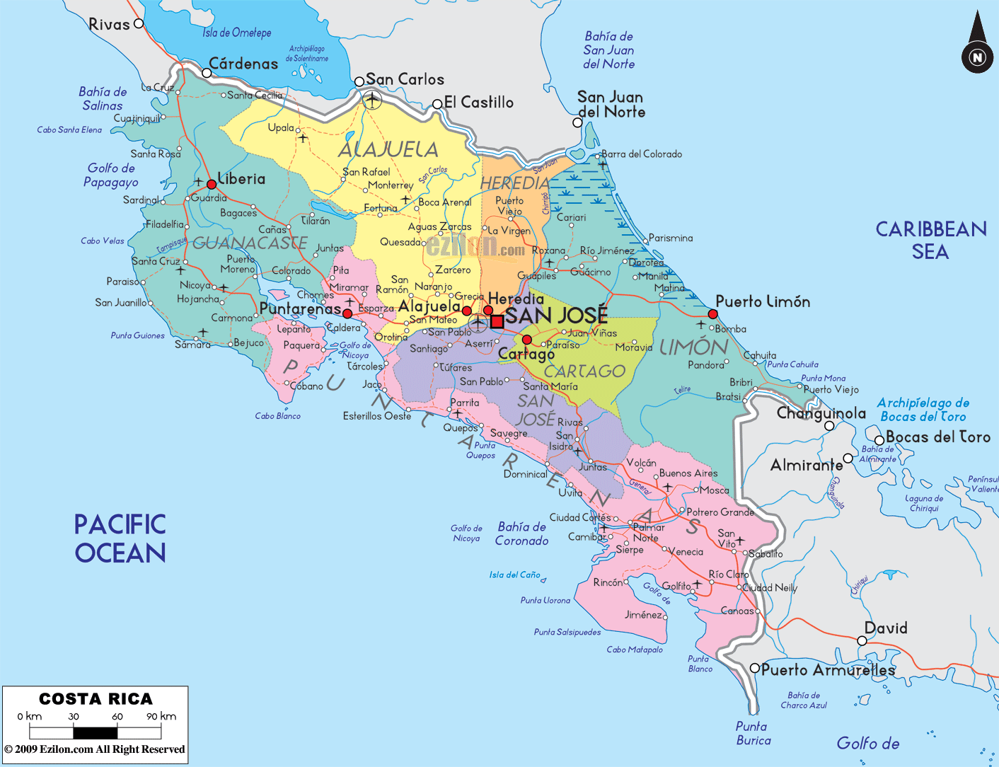
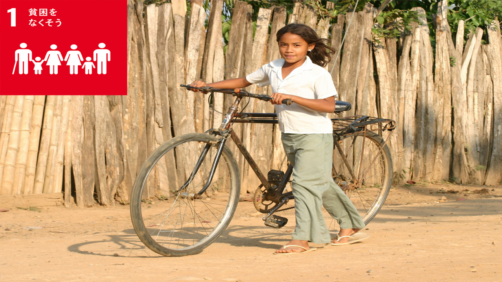

_
北緯11度13分～8度 西経82度33分～85度58分 北はニカラグア、南はパナマと国境を接する。
大きく雨季と乾期の2つに分けられる。

コスタリカは日本の1/7しかないほど小さな国ですが、国土の30%以上を国立公園や自然保護区が占めている自然大国です。
その為珍しい動物がいる！
祭典や祈り、食べ物など色々なものへ国民が敬意を示している。


地球幸福度指数で世界１！
軍隊が無く、警察官も銃を持っていない。
ジュラシックパークのモデルの国

>
１ 貧困をなくそう
コスタリカは、貧困の蔓延、非効率なインフラ建設、 多額の国家債務、 そして租税回避の領域において、依然として重大な問題を抱えている。
 次のページへ
次のページへ